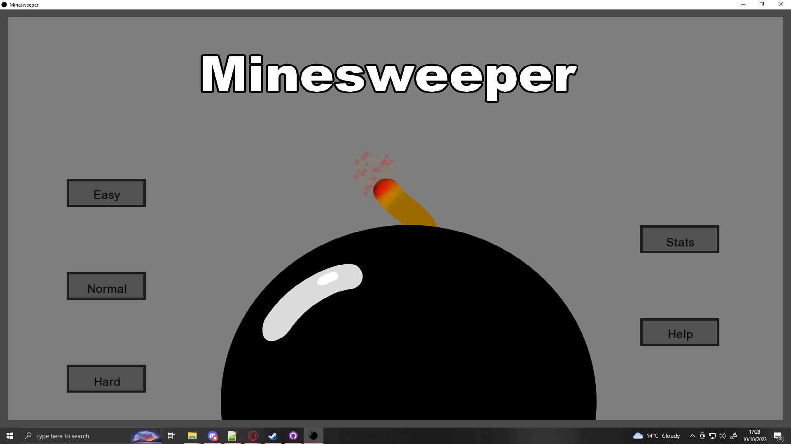
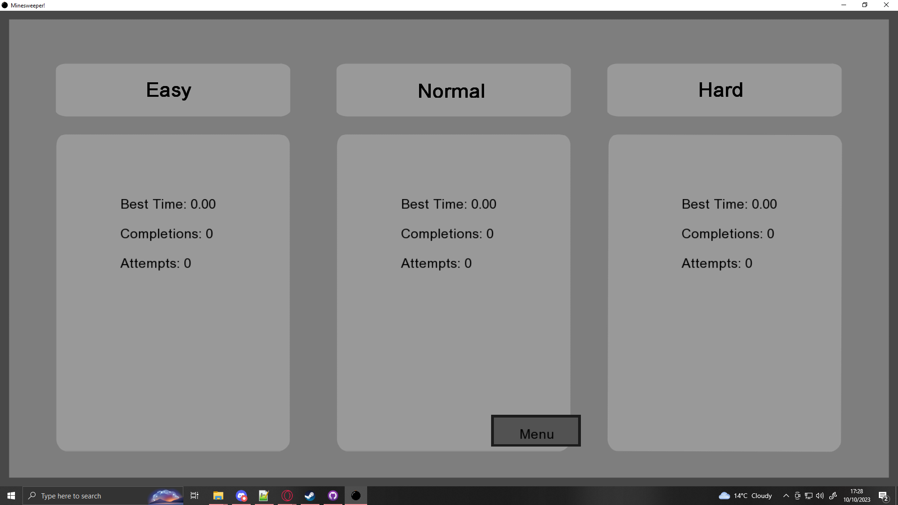
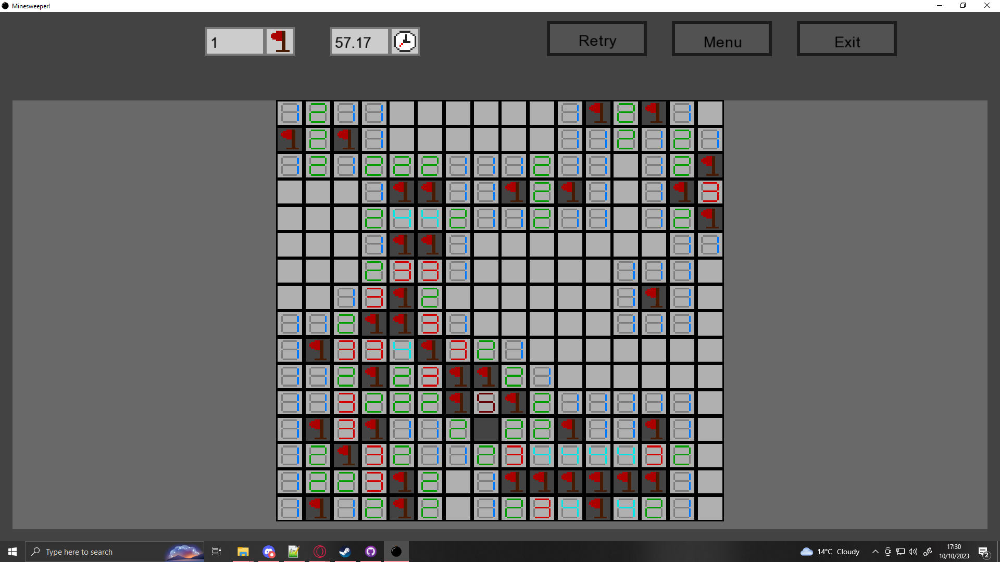
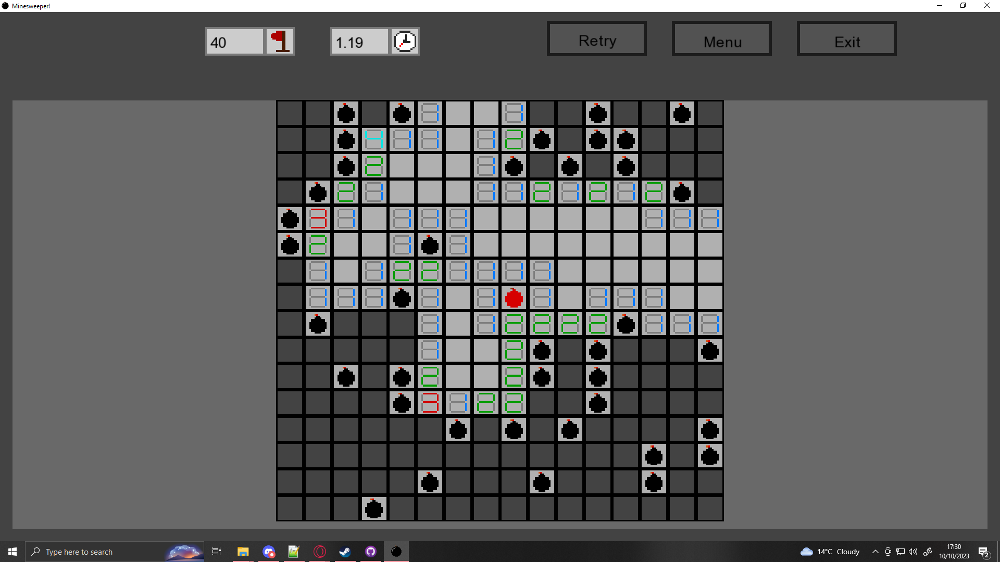
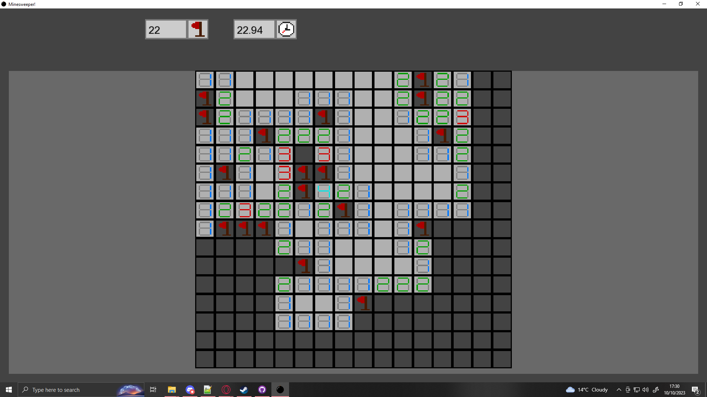
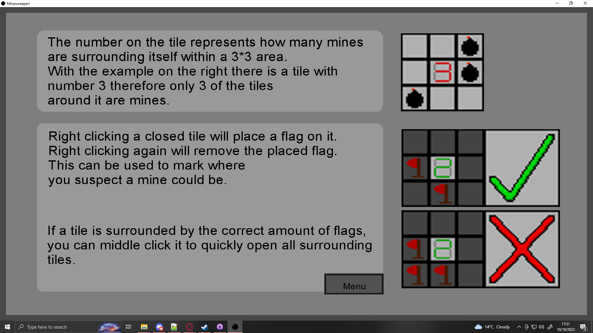
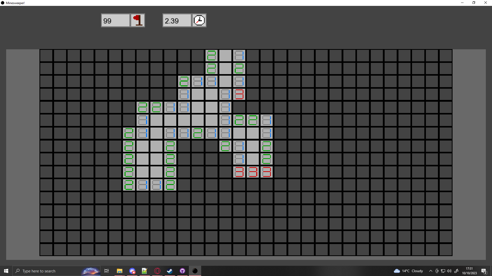

A remake of the classic game Minesweeper in SFML
In first year of University we learnt how to make basic 2D games using SFML and C++, I got really interested in making my own games from scratch from this module rather than using a game engine, and wanted to practice that skill and get a deeper understanding on the flow of game loops. During the break between first and second year I started working on this project to practice that skill, recreating one of my favourite games at the time Minesweeper (Which I still love to this day, and can flex that I used to have a top 100 score on the extreme mode on speedrun.com).







The challenges in this project were not as difficult as others, as this was the second project using the technologies used so I could practice with them more after the assignment for University, in which I made flappy bird. The main challenge with this project was the mechanics of Minesweeper as they seem simple at first, but are a lot more complex when actually trying to re-create them.
I learned a lot about how the flow of a game loop actually runs such as the order for updating, rendering and checking collisions / inputs. I also got a better understanding into C++, the mechanics in minesweeper use a lot of tile checking (Especially when opening a tile with no number as it needs to open every other non-number tile and every first number tile they're connected to) which can lead to using a lot of processing power. It's not on the level of what I could make as of writing this about the project (19/03/2026) but for my current skill at the time I believe it to be well made.